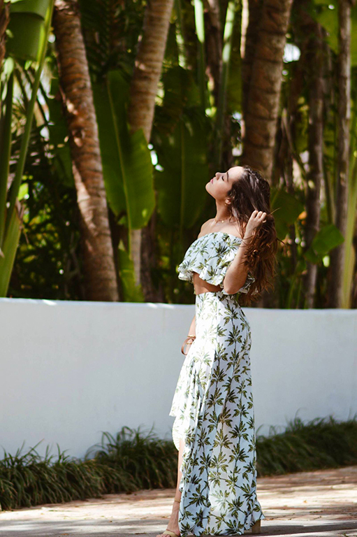
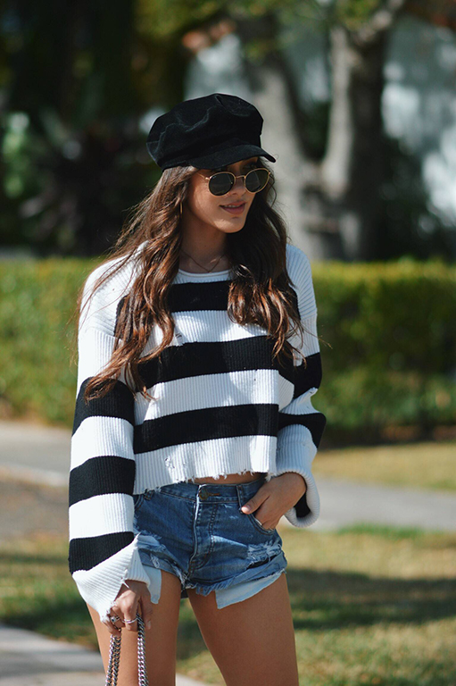
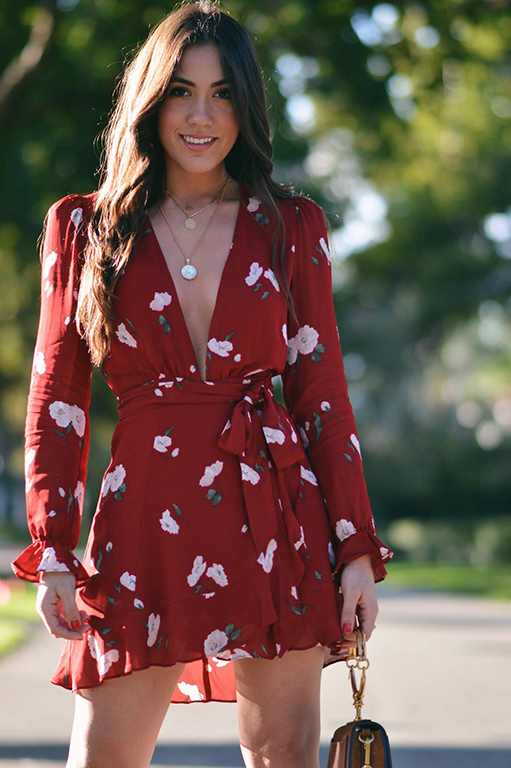

7 QUOTES THAT GIVE ME AN EXTRA BOOST

I graduate from college in 3 weeks… THREE WEEKS PEOPLE! It amazes me how fast time flies, but it also amazes me how much I’ve been able to accomplish and really go for what I want… go after my dreams! But graduation and my future goals is for another post… Right now, I want to focus on the motivation to follow your dreams! My main motivation is and always will be my incredible support system…my family.
But it doesn’t hurt to have some wise words to really give you that little kick in the ass to remind you to push yourself harder. That’s where this post comes in. Today I’m sharing some quotes that give me an extra boost. I’m hoping these will inspire you to keep going and be the best version of yourself!
P.S. How cute is this set from Show Me Your Mumu! It gives me major vacation vibes and gets me totally craving summer! Shop this set and similar looks from the widget above!
- You become what you believe.- Oprah Winfrey
- Think it. Want it. Get it.- Unknown
- No one is you, and that is your power. - Dave Grohl
- If you think big, believe big, act big- then the results will be big. - Unknown
- My mom said to me, "One day you should settle down and marry a rich man." I said, "Mom, I am the rich man". - Cher
- A strong-minded woman is a different animal. - Meryl Streep
- Always dress like it's the best day of your life. - Unknown
Read more: www.hellooliviablog.com
SIMPLE MORNING HABITS THAT SET A POSITIVE TONE TO YOUR DAY

Mornings are my favorite time of day. For me, there’s nothing more satisfying than waking up early to a brand new day with the mentality that you’re going to totally own it. I feel that a positive mindset can be achieved by setting a simple routine and creating good morning habits. So today I thought I’d share a few morning habits that help me start off on the right foot and set a productive/happy tone for the rest of my day.
- Wake up, open the windows and let some sunshine in: No joke, I thrive off of sunlight! The FIRST FIRST thing I do when I wake up is open all my blinds. I need the room to be filled with bright natural light. As cheesy as it sounds, it really makes me happy. Let’s just say, that when it’s gloomy outside I gotta try extra hard to set a positive vibe to the day!
- Make a cup of coffee and truly enjoy it: The second thing I do right after I wake up is make myself a cup of cuban coffee. Coffee is my obsession ever since I was a little girl hahaa. I take my morning coffee very seriously. It needs to be made a certain way, with the right amount of sugar, and all. Once it’s done, I sit down and truly enjoy it. I don’t start scrolling through my phone on instagram or check notifications with emails… I allow myself that time to pray, think about how I hope the day goes, and reflect on what I want to accomplish. I feel like that time to yourself with no computer, no phone, no distractions is so important.
- Make up the bed: I struggle with this one. Sometimes I feel like I don’t have the time, but I know when I make my bed up in the morning, the rest of my day is so much more organized. I’m in a clearer state of mind when my space is decluttered and my bed is made.
- Allow myself enough time to get ready: I’m the type of girl that’s always running late. But in the mornings, I really try to give myself the time I know I’ll need to get ready. There’s nothing I hate more than feeling rushed, so giving myself enough time eliminates that stress.
- Dressing up, even if it’s for no reason: I’ll never forget, back in highschool a girl said something along the lines of…”When you dress cute, you’re automatically feeling confident and prepared to seize the day full force!” That statement always sticks with me! So getting out of my PJs immediately and putting on a fun little outfit like this oversized sweater, one teaspoon denim shorts, and my favorite trendy “newsboy” hat makes all the difference. If you’re loving my outfit as much as I am, I’ve linked all the details above for you to shop!
Read more: www.hellooliviablog.com
5 THINGS I WANT TO BRING INTO THE NEW YEAR!

2017 was a phenomenal year full of opportunities, love, good health, accomplishments, family and God! I want to bring those same vibes into 2018! So today I’m sharing 5 things that we can all bring into the new year!
- Appreciate time and be present: Clearly time flies!!! I mean hello, we are in 2018… wasn’t it just 2010?!?! It’s so important to me to appreciate the time I have with family and friends. Whenever I’m with them I truly try to be present. Putting my phone away for a little and just talking to them, living moments with them, and creating memories that make my heart full is what life is all about . This is a hard one, cause it’s almost habit to be checking your phone or the internet every minute, but putting in the effort to appreciate time, really helps you appreciate what you have.
- Handling the lows: Of course, everyone has their lows through the year. No matter if it’s big or small, we all experience days that are harder than others. One thing that I’m proud of is how my lows were handled with the love and support of my family in 2017. One thing I learned is the importance of surrounding yourself with people that support and love you… People that help lift you up when you are down, but most importantly, be that person for others!
- Self Confidence: Confidence issues is something I’ve struggled with not only this year, but for quite some time. But this year, I truly feel like I saw the light at the end of the tunnel on this issue. With a lot of help, I feel like I finally learned how to let the pressures of wanting to be perfect go. That’s not to say that I don’t have bad days or weeks that I feel self-conscious, but I’ve definitely come a long way. I’ve thought about sharing my experience on this topic here, because I don’t think I’m the only one that suffers from low self-esteem and the pressures of society. There’s no point in standing in front of the mirror and picking out every little thing I dislike about my body… what the heck is that… what type of life is that… I’m going in with the mindset of “Damn my body is special and one of a kind and it doesn’t matter what anyone else thinks…cause it’s mine!” So this year I plan to let go of all that self-doubt!
- Work hard and accomplish goals: 2017 was a year full of incredible work opportunities. I got to work with E! News, Telemundo, and some awesome brands on my blog! To say it was a dream is an understatement. This year I want to carry the same work ethic and passion I have for accomplishing goals throughout each day. One thing I always tell myself is no dream is too big to live. You may think it’s crazy, but it’s so true. As long as you work hard and have the mindset that you can accomplish anything you set your mind to… you will do just that. Tune out any negativity and find your inner strength to pursue your dreams.
- Make others feel loved: Share goodness and love with the ones that are most important to you. Let your family and friends know how special and appreciated they are. Keep the ones you care about close and don’t let a day go by without letting them know how extraordinary they are. Make their year the best one yet, with your endless support and love.
Read more: www.hellooliviablog.com